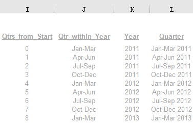
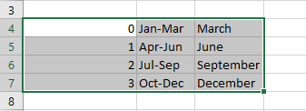
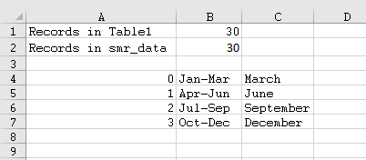
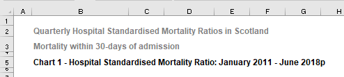

4 Title Auto-Update
Task: to automatically update the chart title based on the time period of the data we’re showing.
Steps
- Find the last time period for which we have records. (In this example records are only added, not removed, so the start date will remain the same, January 2011).
- Find the number of records that are in the table.
- Use a
VLOOKUPto find that last month and year for which we have data.
- Join the fixed part of our title with the dynamic section using formula. (Add a
pto the last date for provisional data).
Details
In this worked example we are using HSMR_TableA1b_Automated, with sheets Table1 and Chart2. Each quarter a new row will be added, we need to make our title automically update to include this information.
- Here we will need to create a four column reference table (for this, we right-clicked on column
Iand clicked insert 4 times). *This step was completed in for the previous chapter, “Auto-Add Table Row.* The table we created looks like this with the formulas listed below.

Col I (Qtrs_from_Start) - this follows the same format as for Column A, except that we start the count at 0.
Col J (Qtr-within_Year) - This requires its own reference table which we have created in “Sheet 1” for Sheet1!$A$4:$C$7 in the formula. That table should look like the screenshot below. The full formula to use in column J is: =VLOOKUP(MOD(<Qtrs_from_Start>, 4), T$12:V$15, 2).

Col K (Year) - = <Start Year> + QUOTIENT(<Qtrs_from_Start>, 4). As an example, the first formula for K11 will be =2011 + QUOTIENT(I11, 4).
Col L (Quarter) - =CONCATENATE(<Qtr_within_Year, " ", <Year>). As an example, the first formula for L11 will be =CONCATENATE(J11, " ", K11).
- Create a lookup table like this:

- Compose the formula:
- Initial start of title: “Chart 1 - Hospital Standardised Mortality Ratio: January 2011 -”
- Last month:
=VLOOKUP(<remainder_of_quarter_number>,<lookup_table>,<3rd_column>), e.g.=VLOOKUP(MOD(MAX(Table1!$I:$I),4),Sheet1!$A$4:$C$7,3). (Since our data is split up by quarter, there are only 4 months that could be the last month of each quarter (March, June, September, or December). We then take our maximum “Qtrs_from_Start”, divide that by 4 (qtrs per year) and then find the remainder. This remainder will tell us the last month of the last quarter within the year that our last record is in, which is what we’re looking for.) - Last year:
=MAX(<Year>)- in this example,=MAX(Table1!$K:$K). - Final
pcharacter: “p”. This all creates the formula:"Chart 1 - Hospital Standardised Mortality Ratio: January 2011 - " & VLOOKUP(MOD(MAX(TABLE1!$I:$I),4),Sheet1!$A$A:$C$7,3) & MAX(Table1!$K:$K) & "p"into the place where our chart title should go.
